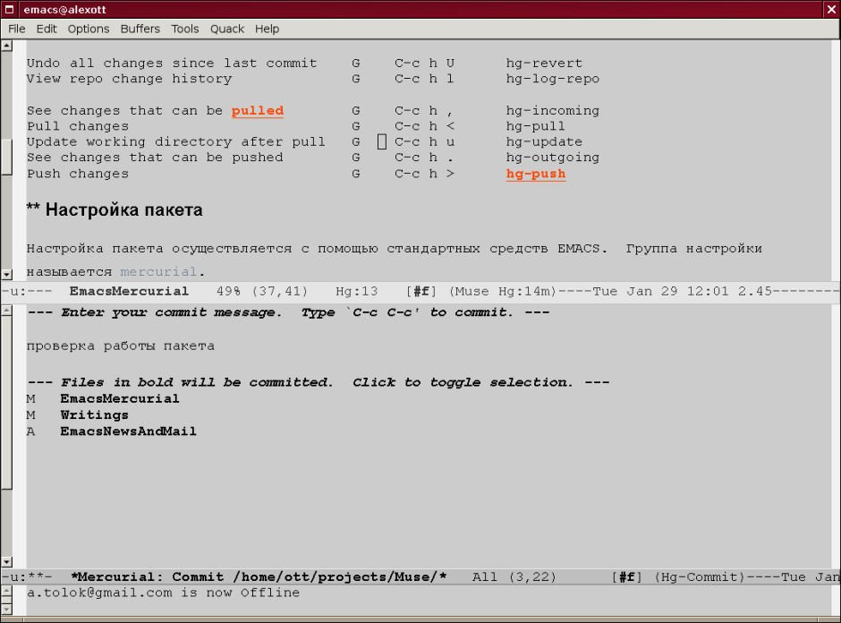

Принципы работы mercurial.el во многом аналогичны работе пакета VC (стоит отметить, что поддержка Mercurial имеется и в VC) и используют те же самые привязки клавиш, что и пакет VC. mercurial.el — вспомогательный режим, который добавляет некоторое количество команд для выполнения основных задач при работе с репозиториями.
Часть команд пакета имеет глобальные привязки клавиш (по умолчанию это C-c h, но может
быть и изменено в настройке), а часть команд доступна только внутри буфера, в котором
включен режим hg-mode. При этом, для многих команд можно также задать префиксный
аргумент, который позволит задать дополнительные параметры в интерактивном режиме.
Справку по командам и привязкам клавиш пакета можно получить с помощью команды
hg-help-overview (C-c h h).
Чтобы просмотреть изменения, сделанные в процессе работы, пользователь может использовать
либо команду hg-diff (C-x v =), которая показывает изменения для текущего
файла, либо команду hg-diff-repo (C-c h =), которая показывает изменения для
всего репозитория. Обе этих команды, открывают дополнительный буфер, в котором и
отображаются изменения. Чтобы закрыть этот буфер используйте клавишу q.
Подтверждение изменений осуществляется командой hg-commit-start, которая имеет две
привязки клавиш: локальную —
C-x v n и глобальную —
C-c h c. При выполнении этой
команды, mercurial.el создает новый буфер, в котором пользователь может ввести текст
сообщения, которое будет записано в журнал изменений. Кроме текста пользователя, в нижней
части буфера отображается список файлов, изменения для которых будут подтверждены. По
умолчанию, это все файлы, но пользователь может изменить этот список путем перемещения
курсора на имя файла и изменения признака выбора (жирный шрифт) с помощью клавиш SPC или
RET, или с помощью средней кнопки мыши. На рисунке можно увидеть пример работы с этим
буфером, при подтверждении изменений.

В буфере, созданном при выполнении команды hg-commit-start включается отдельный режим,
имеющий название hg-commit-mode. Для него определено несколько сочетаний клавиш, которые
могут быть использованы пользователем. C-c C-c, так же как и во многих других пакетах,
производит операцию подтверждения изменений в репозиторий, используя введенный
пользователем текст. Сочетание C-c C-k прерывает процесс подтверждения изменений. А
сочетание C-x v = позволяет выполнить просмотр подтверждаемых изменений.
Для отмены сделанных изменений можно также воспользоваться одной из двух команд:
hg-revert-buffer (C-x v u) откатывает изменения только для текущего файла, а команда
hg-revert (C-c h U) проделывает то же самое для всех измененных файлов в репозитории.
Для добавления файла в репозиторий можно воспользоваться командой hg-add (C-c h a). По
умолчанию, она добавляет в репозиторий текущий файл, но если ей задать префиксный
аргумент, то она запросит имя файла, который необходимо добавить в репозиторий. Функция
hg-forget (C-c h f) (она еще не реализована полностью) предназначена для отмены добавления
файла в репозиторий, если вы еще не выполнили команду подтверждения изменений, что бывает
полезно в некоторых случаях.
Чтобы посмотреть статус файлов в репозитории, можно воспользоваться командой hg-status
(C-c h s), но в отличии от других пакетов, пользователю не разрешается выполнять
какие либо операции с полученными данными. Для просмотра истории изменений конкретного
файла определена команда hg-log (C-x v l). Аналогичная команда для просмотра истории
изменений репозитория называется hg-log-repo (C-c h l). Также, определена и команда
hg-annotate (C-x v a), которая должна показывать файл, с указанием того, в какой версии
что менялось, но пока эта функция полностью не реализована.
Кроме этих базовых операций, пакет также предоставляет набор основных операций для работы
с ветками и удаленными репозиториями. Команда hg-incoming (C-c h ,) позволяет просмотреть
список изменений в удаленном репозитории, которые отсутствуют в текущем репозитории, а
команды hg-pull (C-c h <) и hg-update (C-c h u), соответственно, скачать
изменения, и применить их к текущему репозиторию. Команды hg-outgoing (C-c h .) и hg-push
(C-c h >) позволяют просмотреть какие изменения присутствуют в текущем репозитории, но
отсутствуют в удаленном, и поместить их туда (push).
Настройка пакета осуществляется с помощью стандартных средств Emacs. Группа настройки
называется mercurial. Пользователь может, например, изменить префикс для глобальных
привязок клавиш, используемых некоторыми командами (по умолчанию —
C-c h).
Пользователь для настройки поведения пакета может воспользоваться несколькими хуками,
которые будут вызываться в определенные моменты работы пакета. hg-commit-mode-hook будет
вызываться после создания буфера, отображаемого пользователю перед подтверждением
изменений. В свою очередь hg-pre-commit-hook вызывается после того, как пользователь
введет сообщение для журнала изменений, и перед тем, как будет выполнено подтверждение
изменений в репозитории. hg-log-mode-hook вызывается после создания буфера, заполненного
информацией из журнала изменений при вызове команд hg-log-repo и hg-log. И конечно,
пользователь может определить hg-mode-hook, который будет выполнен в процессе включения
hg-mode для данного буфера.